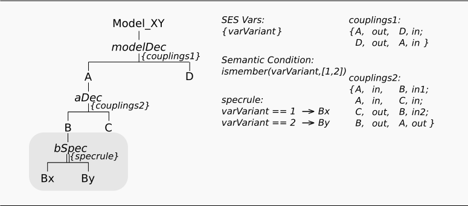
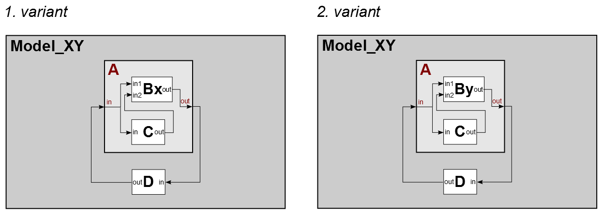

Variant Modelling Using Specializations
(is-a relation)
Motivation
This example shows, how you can describe different model structures in a single SES by using Specializations. The SES specifies two model structures (variants) using a general entity B that is specialized by an entity Bx or By (taxonomy).
Basic SES model:

In the SES specified model structures:

Entities
Variant 1 - The model consist of:
- atomic models (AM): Bx, C, D
- coupled models (CM): A
Variant 2 - The model consist of:
- atomic models (AM): By, C, D
- coupled models (CM): A
Description
Adding a Specialization
Specializations describe a is-a relation between entities. In the example, the 2 model variants consist of an component A, which is composed by different specializations (Bx, By) of a component B. In order to describe these 2 variants you need to add a Specialization to the component B. A Specialization always represents a decision node. The selection decision can be defined using a Specialization Rule (Specrule) as following or by Selection Constraints (see ex. 5).
SES Variables
In order to control the selection of variants during pruning using specialization rules you need to add SES Variables to your SES model. Here the SES Variable "varVariant" is defined. You can specify default values for SES Variables. SES Variables have a global scope.
Semantic Conditions
It is conventional to define the valid domain for each SES Variable. This can be done by using Semantic Conditions. You can enter any kind of MATLAB conform condition statement to describe it. Here the SES Variable "varVariant" can only have the value "1"or "2", that is defined with:
- ismember(varVariant, [1,2])
Specialization Rule (Specrule)
After defining the SES Variable you can set the Specrule. Select the Spec-Node and add your conditions. A Specrule consist of a condition and a selection, that occurs, when the condition is valid. Be sure not to enter conditions, that could be valid at the same time, as it will lead to an error message during pruning.
REMARK
Specialized systems are in a parent-child inheritance relation. The examples 8 and 9 use inheritance mechanisms. For detailed information regarding the inheritance axiom see B.P. Zeigler and P.E. Hammonds "Modeling and Simulation-Based Data Engineering", Elsevier, 2007.